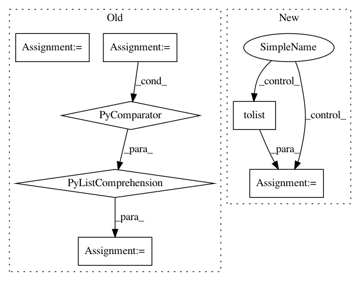

edac1ed27ba8a4db58f526af053d6cd2b4f50497,category_encoders/basen.py,BaseNEncoder,basen_to_integer,#BaseNEncoder#,335
Before Change
len0 = len(col_list)
value_array = np.array([base ** (len0 - 1 - i) for i in range(len0)])
X[col] = np.dot(X[col_list].values, value_array.T)
out_cols = [col0 for col0 in out_cols if col0 not in col_list]
X = X.reindex(columns=out_cols + cols)
return X
After Change
value_array = np.array([base ** (len0 - 1 - i) for i in range(len0)])
X.insert(insert_at,col,np.dot(X[col_list].values, value_array.T))
X.drop(col_list, axis=1, inplace=True)
out_cols = X.columns.values.tolist()
return X
def col_transform(self, col, digits):
In pattern: SUPERPATTERN
Frequency: 3
Non-data size: 7
Instances
Project Name: scikit-learn-contrib/categorical-encoding
Commit Name: edac1ed27ba8a4db58f526af053d6cd2b4f50497
Time: 2019-03-22
Author: datarian@againstthecurrent.ch
File Name: category_encoders/basen.py
Class Name: BaseNEncoder
Method Name: basen_to_integer
Project Name: pgmpy/pgmpy
Commit Name: f58745ab284f48b7ef4ce813f5f8cd26bdb3c0a8
Time: 2015-06-16
Author: ankurankan@gmail.com
File Name: pgmpy/inference/Sampling.py
Class Name: BayesianModelSampling
Method Name: forward_sample
Project Name: scikit-learn-contrib/categorical-encoding
Commit Name: be4714db73202347a07044f2e26920e0da95fff3
Time: 2019-03-23
Author: datarian@againstthecurrent.ch
File Name: category_encoders/basen.py
Class Name: BaseNEncoder
Method Name: basen_to_integer